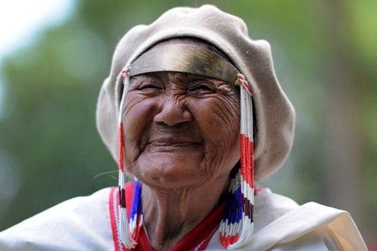

Stanovništvo Kanade
Kanadski starosjedioci su Indijanci i Eskimi, prastanovnici doseljeni preko Beringova prolaza iz Azije prije 20 000 godina, čiji život ovisi o prirodnoj sredini. Prvi Europljani koji su naseljavali sjeverne krajeve Sjeverne Amerike bili su Vikinzi koji su do kanadskih obala doplovili 986. godine.
Nakon otkrića Amerike u ove krajeve preko Hudsonova zaljeva prvi dolaze Englezi (1497.) pa 40 godina poslije Francuzi koji su uz rijeku St. Lawrence osnivaju Québec. Glavni uzrok kolonizacije ovih klimatski nepovoljnih krajeva bio je lov i trgovina krznom. Godine 1759. dolazi do sukoba Francuza i Britanaca pri čemu pobjeđuju Britanci.
S vremenom je Velika Britanija na tom prostoru stvorila kolonijalni posjed Kanadu, koja 1791. dobiva ustav. Nakon Američkog rata za neovisnost u Kanadu bježe rojalističke izbjeglice iz Nove Engleske. Kako se ne bi ponovila situacija sa SAD-om koje su izborile samostalnost i neovisnost, Britanci 1867. g. dopuštaju stvaranje dominiona Kanade od četiriju istočnih pokrajina, ali britanski kralj ostaje vladar Kanade.
Do danas je stvorena Kanada s 10 pokrajina i 2 teritorija. Tijekom 19. st. u Kanadu doseljava stanovništvo uglavnom iz UK: Škoti, Englezi, Irci i Velšani, zatim Francuzi, a tijekom 20. st. i ostali Europljani, Skandinavci, Slaveni i dr. Kanada je zakonskim promjenama 1931. g. postala samostalna i članica je Commonwealtha. Generalnog guvernera postavlja britanski kralj na prijedlog kanadskog premijera.
Naseljavanjem različitog stanovništva stvoreno je izrazito multietničko društvo, s dvama službenim jezicima, engleskim i francuskim. Jedini dio Kanade koji je etnički homogeniji jest Québec u kojem živo oko 80% francuskog stanovništva koje čuva svoj jezik, tradiciju i kulturu. Kanada dopušta selektivno useljavanje po utvrđenim kriterijima. U Kanadu su doselili i Hrvati koji su najviše koncentrirani u Torontu.
U usporedbi sa SAD-om, u Kanadi živi manje pripadnika crne i žute rase. U Kanadi živi 30 735 000 stanovnika što predstavlja gustoću od 3 st po km², ali su velike razlike u gustoći naseljenosti. Danas 2006. procjenjuje se da u Kanadi živi 32.5 milijuna stanovnika. Najgušće su naseljeni prostori uz Velika jezera i rijeku St. Lawrence te u južnim dijelovima prerijskih provincija gdje živi oko 90% kanadskog stanovništva. Izrazito rijetka gustoća naseljenosti jest u klimatski nepogodnim prostorima, sjevernim teritorijima i na planinskom zapadu.
Prema popisu iz 2001. Kanada ima 34 etničke zajednice s više od 100 000 pripadnika što ju čini vrlo raznolikom. Najveća etnička grupa deklarira se Kanađanima (39.4%), slijede Englezi (20.2%), Francuzi (15.8%), Škoti (14.0%), Irci (12.9%), Nijemci (9.3%), Talijani (4.3%), Kinezi (3.7%), Ukrajinci (3.6%) i sjevernoamerički Indijanci (3.4%).
Po zadnjem popisu iz 2001. 77.1% Kanađana izjašnjava se Kršćanima, a Katolici čine najveću grupu (43.6% svih Kanađana). Najveća protestantska denominacija je Ujedinjena kanadska crkva s 9%,a protestanti ukupno čine 36% stanovništva. Otprilike 17% Kanađana nema vjersko opredjeljenje.